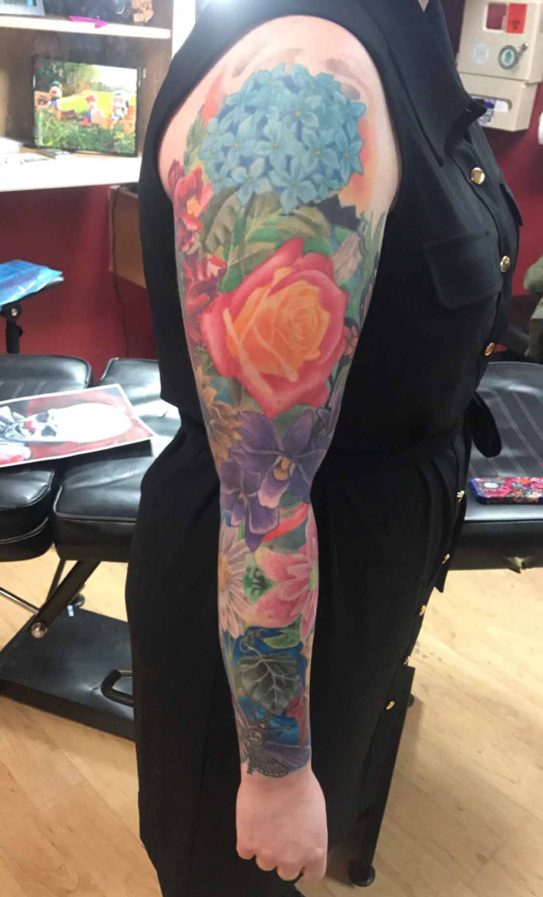
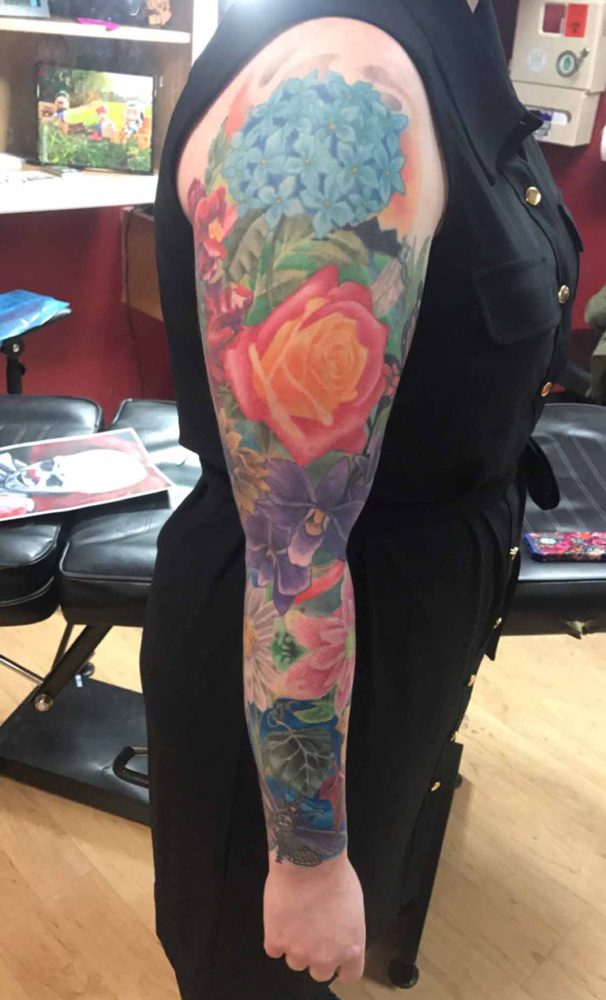

Mark Matias
My name is Mark Matias. I'm a tattoo artist from Dearborn Heights, MI. I began my career as an apprentice at Beyond Reality Tattoos in Wyandotte, MI in 2006. Two years later, I accepted a position at the same shop as a tattoo artist.
I've tattooed at Liquid Chaos, Artistic Superstition, Eternal Tattoos Eastpointe, and Kustom Kulture. Recently I just opened my new shop, Blackwater Studios, in Dearborn Heights where I currently am.
I specialize in black & gray, realism, and neo traditional. My favorite subject matter are dark imagery, portraits, skulls, roses, and animals.
I tattoo by appointment only and require a $100 deposit to book a tattoo.


Kory Swanson
My name is Kory Swanson , I have been tattooing almost 14 years. Drawing all my life. If I had to say what style I am good at I would say “surrealism “.
Personally, I think (good) tattoo artists should be able to do all styles and types of art. I have been doing it a long time but I am still learning.
My hobbies are tattooing, drawing, painting, skateboarding, Footbag, dream catchers, creation in general if you would like to make a appointment with me please contact me below.
 
